A living island at the top of your screen.
Cosmo rests as a small clock, shows the line being sung while your music plays, and opens into a tiny dashboard when your mouse comes by.
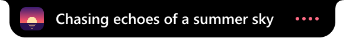
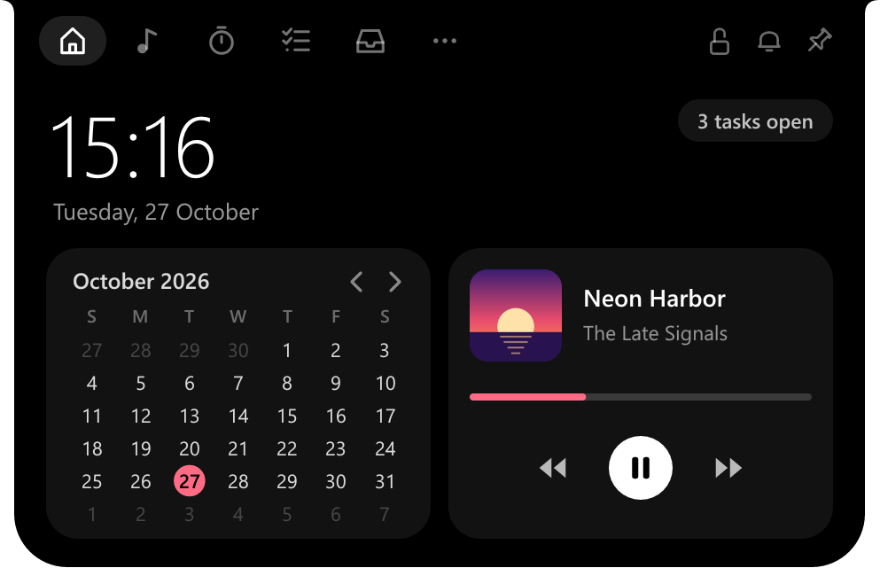
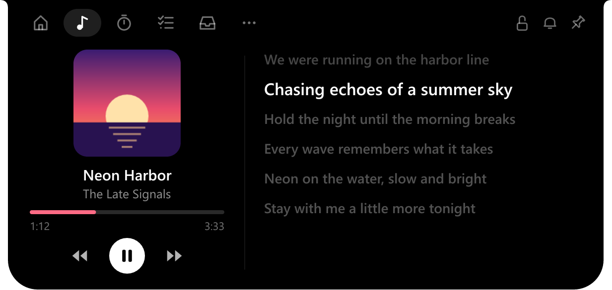
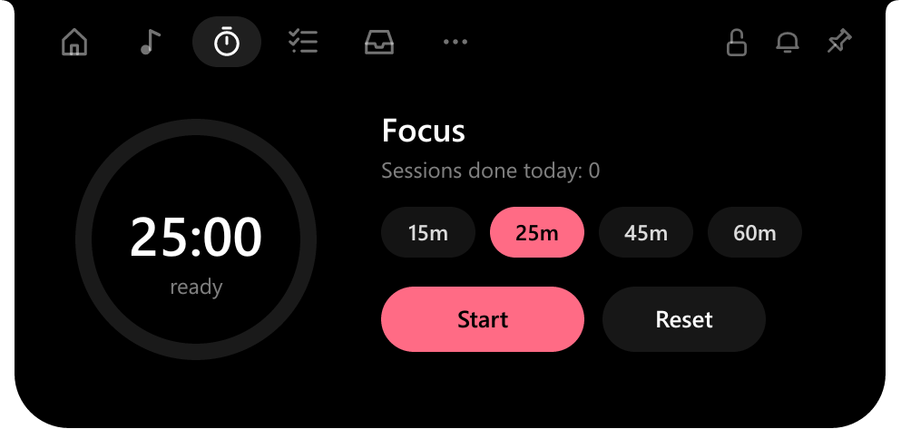
Everything a glance away.
Hover to open, move away to close, or turn on Click to open if you'd rather it waited for a click. Nothing to launch, no window to find.
Your song, and every word of it.
Works with Spotify, YouTube in the browser, Apple Music, or any app in Windows' media controls. Synced lyrics scroll beside the cover, and the line being sung stays on the closed island.
- Play, pause, skip, and jump 10 seconds back or on, from the island
- Accent colour picked from the album cover
- Lyrics from LRCLIB, or NetEase when LRCLIB has none, saved so each song is looked up once
- Lyrics running early or late? Nudge them, and the fix is kept for that song
Sing along in any script.
Japanese and Korean lyrics are shown in Latin letters, with the original line right below, so you can follow the sound and still see the words as written.
- Hiragana, katakana and hangul read out of the box
- Turn on the Kanji readings add-on (9 MB) in Settings › Features to read kanji too
- The add-on downloads only when you switch it on, and is removed when you switch it off
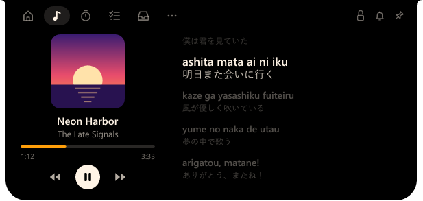
Grab it, mark it up, or record it.
Pick a part of the screen, a window, or the whole screen. A screenshot is copied and saved at once and opens in the editor, ready for arrows, boxes, highlights, numbered steps, text, blur and cropping, with the tool, colour and size you used last.
- Alt + Shift + S screenshot, Alt + Shift + T copies the text in it, Alt + Shift + R records; change any of them
- A magnifier by the pointer shows the exact spot and its colour; hold Shift for a square
- Recordings to MP4 with the PC's sound and your microphone, mouse clicks and shortcuts shown, and pause when you need it
- Trim a recording, put marks and text on it for a moment, add another recording to the end, or turn it into a GIF
- Kept in Pictures › Screenshots › Cosmo: the newest 20, 50, 100 or all screenshots and recordings, as you choose
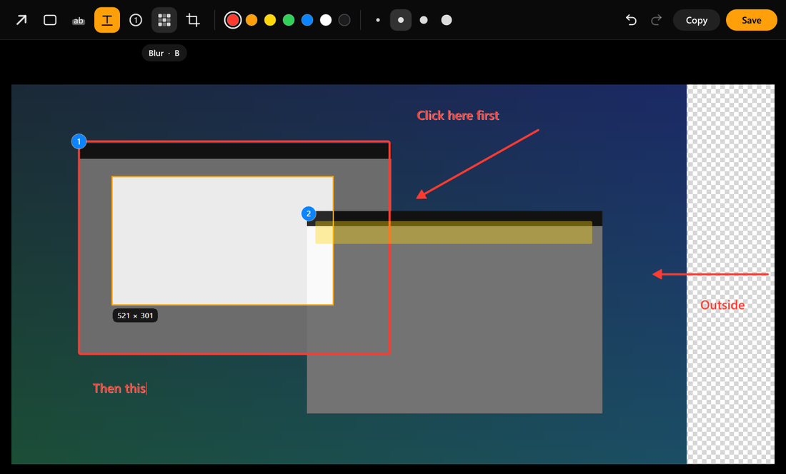
A link instead of an attachment, for their eyes only.
Choose Share on any screenshot, recording or GIF, from Captures or right in the editor, and its link is copied for you. It's encrypted on your PC before it goes, and the key is in the link itself: whoever has the link sees it, with how many have seen it and a Download button. Not even Cosmo's server can open it.
- Long private links, or short ones whose key the server keeps: your choice
- Links stay until you take them down; the Links tab shows yours, to copy, open or take down
- Up to 100 MB a file; nothing leaves your PC until you choose Share
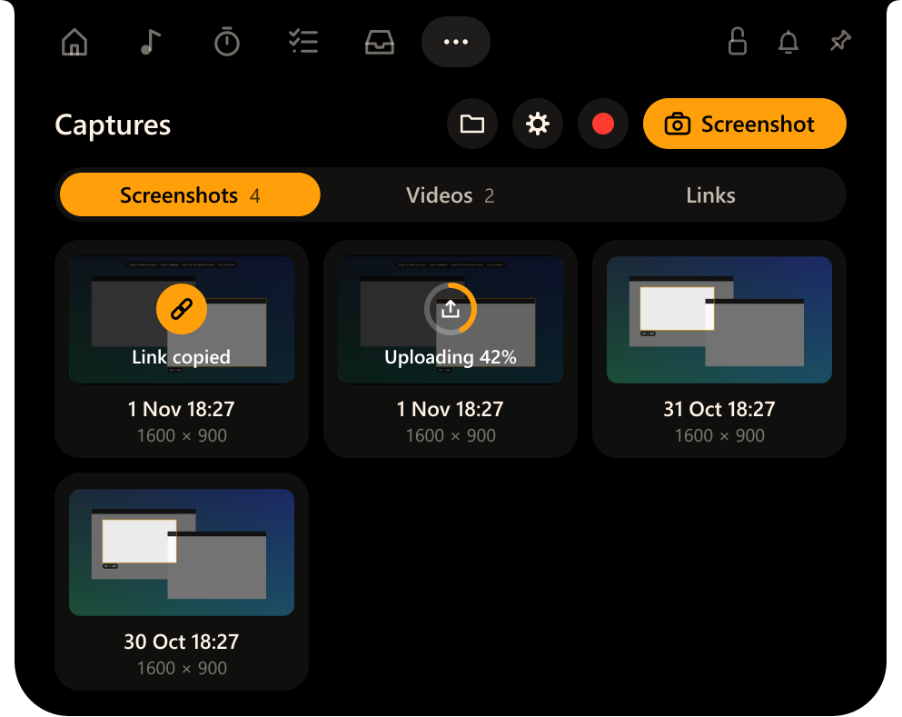
Any text, in your language.
Select text anywhere (a page, a document, a chat) and press Alt + Shift + L. A card by the pointer shows it in Indonesian, or in English when it already is Indonesian.
- Nothing selected? Pick part of the screen and the text there is read and translated, from pictures, videos and games too
- Screenshots on the Captures page have a Translate button
- Switch between Indonesian and English on the card, copy the result, and scroll through long ones
- Japanese and Chinese written top to bottom is read too, with Accurate text reading on
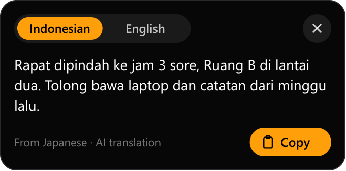
What your PC is doing, down to the watt.
CPU load per thread, GPU and VRAM, memory, network, every drive with its reads and writes, and the power the whole PC is drawing. Read from the same counters Task Manager uses.
- CPU power measured from the chip where it reports it
- Processes, clock speed and uptime at a glance
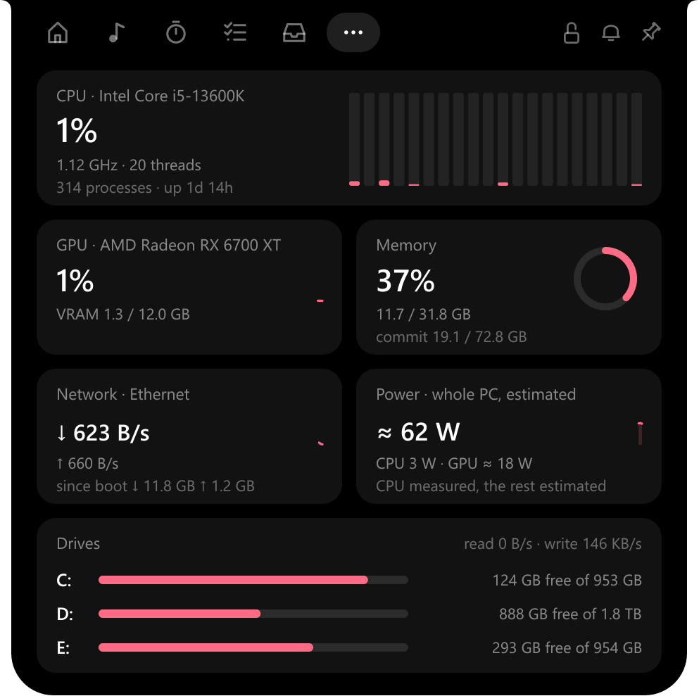
Frames per second, without touching the game.
FPS is counted from Windows' own frame log, so nothing is injected into the game. Show it on the island, or in a small overlay in a corner of the game.
- FPS only, or FPS with CPU, GPU, RAM and power
- Alt + Shift + G switches modes, Alt + Shift + F hides the overlay
- DirectX 9 to 12 games
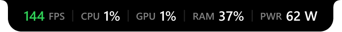
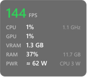
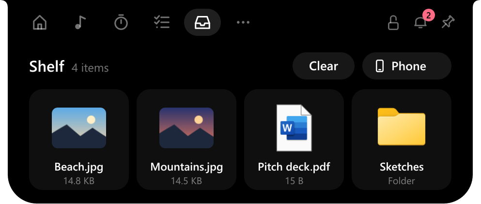
A shelf for files on the move.
Drop files on the island and drag them out later, into a chat, an email or another folder. Only their places are remembered; nothing is copied.
- Send photos from your phone by scanning a QR code: same Wi-Fi, nothing to install
- The phone link works only while its card is open, and warns you on a public network
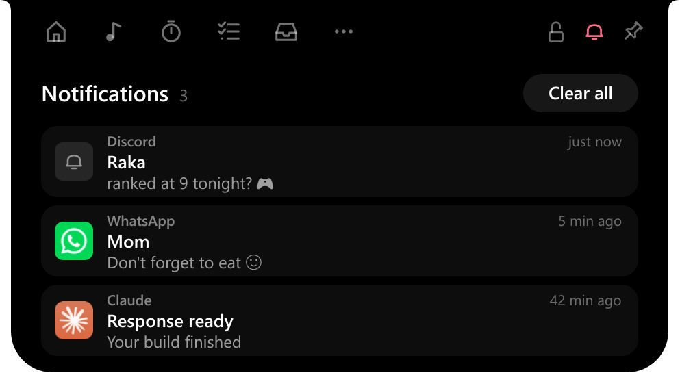
Messages, without the pile.
Discord, WhatsApp, mail and other apps peek on the closed island for a moment; the bell keeps count of what you haven't opened. Click one to open its app.
- Windows' own system notices are left out
- Read from Action Center, never saved
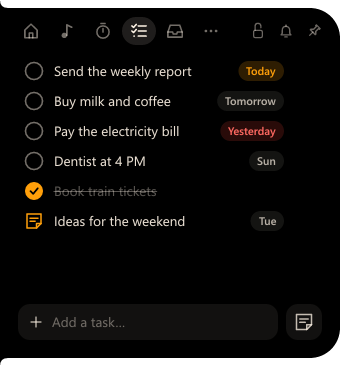
What's due, and when.
A short to-do list one hover away. Give a task a due date with a click (today, tomorrow, next week or any day on the calendar) and a time if it has one: when the time comes, the island tells you. Overdue ones turn red, and Home tells you what's due today.
- Sticky notes sit on the desktop with a title and their own due date, and are listed here too
- Due days are marked on the calendar
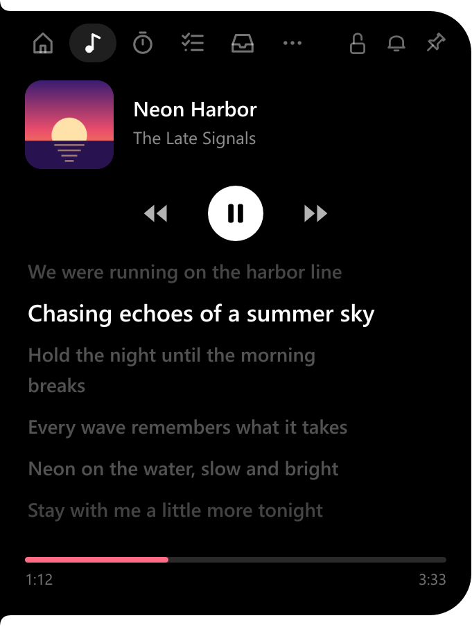
Put it where it suits you.
Drag the island to any edge. At the top it hangs as a notch; on the left or right it stands up, with pages laid out to match; at the bottom it opens upward; anywhere else it floats. It snaps to the middle of each edge, and a lock keeps it there.
And the rest of your desk.
Your screens, your windows and your clipboard, from the same island.
Brightness and warmth for each screen.
A slider for every monitor, set on the monitor itself over DDC/CI where it answers, through Windows on a laptop, or with a dimming layer where neither works. Contrast sits beside it, and warm light tints the pointer along with the screen.
- Ready-made modes: Day, Evening, Reading, Night and Late night, plus presets of your own
- Each screen is set back as it was when Cosmo quits
Windows that land where you want them.
Hold Shift while dragging a window and the screen's zones appear; let go over one and the window fills it. Hold Ctrl too and it spans every zone you pass over.
- Start from 2 or 3 columns, 2 × 2, 3 × 2, 2 rows or Priority, or draw your own
- Edit on screen: move, size and snap zones at their real size, and keep up to 8 presets
Everything you copied, still there.
Off until you turn it on. Kept encrypted on your PC across restarts, and password manager copies are skipped. Ctrl + Shift + V opens it by the pointer.
- Pin the clips you use most, tag them, and search with #tag
- Text shortcuts turn a keyword like
;addrinto its text in any app - Commands: small scripts that run on a clip, written as in CopyQ, with keys of their own
- Brings in your clips from CopyQ and Ditto
A little company on the island.
The weather sits under the date on Home: the sky, how warm it is, and where. A duck astronaut stands on the island or floats beside it, jumps at a notification, cheers when a focus session or task is done, and holds up a sign when an update is out.
- Weather for Windows' location, or a place you type or pick on a map
- Click the duck's sign to update; turn the duck off if you'd rather
Five looks to start from.
Cosmo, Smoke, Midnight, Light and Retro are only starting points: change the background, text and accent with a colour picker, pick from six fonts, add scanlines, and make the island Small, Medium or Large.


Pick an accent to try it on the island and this page.
And the little things.
Focus timer
15, 25, 45 or 60 minutes, still counting on the closed island.
Calendar
The month on Home, starting on the day your region starts the week.
Sticky notes
Notes on your desktop with a title, as long as you like, in the island's colours. Pin one on top; they come back after a restart.
Apps
Pin any installed app, Store app or Steam game, or browse to any file, and open it in one click.
Keeps itself up to date
Checks for a new version every hour; one click updates and restarts it. Only updates signed by Cosmo are installed.
Click to open
Rather it didn't open as the mouse passes? It can wait for a click, and close only when you click elsewhere.
Out of the way in fullscreen
Hides itself while a video or app fills the screen, and comes back when it's done.
Follows you to another PC
Sign in with Google to sync settings, clips, tasks and notes, encrypted with a password only you know.
Light enough to forget it's there.
Native Rust, drawn pixel by pixel. No browser engine inside.
Stays on your PC
No account needed, no tracking. Notifications are never saved, and clipboard history, sticky notes and tasks are stored encrypted so only your Windows account can read them. If you choose to sign in with Google, they sync between your PCs through a hidden Cosmo folder in your Drive, encrypted with a password only you know (unless you choose not to).
A few small requests go out
To find lyrics, the song's title, artist and length are sent to LRCLIB, and to NetEase if LRCLIB has none. Every hour it asks GitHub for the newest version (you can turn that off), and add-ons come from GitHub only if you switch them on. A capture goes to Cosmo's sharing server only when you choose Share, encrypted on your PC first, and stays until you take it down. Text you translate goes through Cosmo's server to Cloudflare's AI and isn't kept. With Weather on, your rough location (or a place you type) goes to weather and map services. Nothing else. Read the privacy policy.
Up and running in a minute.
Download
Get Cosmo-Setup.exe and run it. It installs for your account only, so no admin password is needed.
If SmartScreen asks
The installer isn't code-signed yet, so Windows may say it "protected your PC". Choose More info, then Run anyway.
Hover the island
It appears at the top of your screen. Right-click it for the menu; drag it to move it.
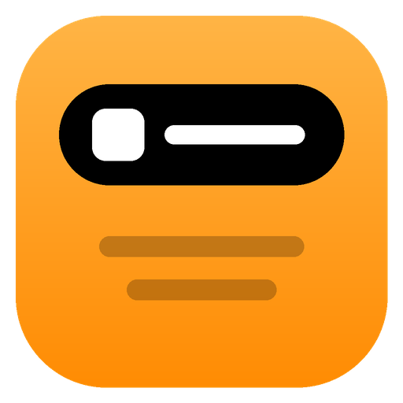
Get Cosmo
Free for Windows 10 and 11 (64-bit). Remove it any time from Settings › Apps.
Cosmo is free, and stays free.
If it makes your desk a little nicer, any support helps keep it growing.
Questions
Why doesn't the FPS show up?
Reading Windows' frame log needs your account to be in the "Performance Log Users" group. Right-click the island, open Gaming mode and choose the permission item: Windows asks once, then sign out and back in. Vulkan and OpenGL games aren't counted yet.
The overlay doesn't appear over my game.
Nothing can draw over a game in old-style exclusive fullscreen. Switch the game to borderless or windowed fullscreen. If Fullscreen Optimizations were turned off for that game, the Game page offers to turn them back on.
Notifications are empty.
Windows has to allow it: Settings › Privacy & security › Notifications › Let apps access your notifications.
Does the brightness slider work on my monitor?
Most external monitors answer over DDC/CI, so Cosmo sets their own brightness and contrast; if yours has DDC/CI switched off in its menu, turn it on. Laptop screens are set through Windows. Where neither works, Cosmo dims the screen with a layer of its own instead.
Will warm light tint my screenshots?
No. Cosmo warms each screen through its colour ramp, which screenshots and recordings don't see. On a screen where that can't be set, it uses Windows' colour effect instead, and turns it off for a moment while Cosmo takes a screenshot or recording.
Where are my settings kept?
In %APPDATA%\Cosmo: settings, tasks and sticky notes (encrypted), the focus timer, pinned apps, the shelf, clipboard history (encrypted), saved lyrics and their timing fixes, and add-ons, so all of it is still there after a restart. Screenshots and recordings go to Pictures › Screenshots › Cosmo. Uninstalling asks whether to remove Cosmo's data too.
Can my settings follow me to another PC?
Yes, if you want: sign in with Google in Settings › Account and choose a sync password. Settings, clipboard history, tasks and sticky notes are encrypted on your PC with that password (or, if you'd rather, synced without encryption), then kept in a hidden Cosmo folder in your Google Drive that Cosmo alone can use. Cosmo can't see your other Drive files. More in the privacy policy.
Japanese lyrics still show kanji.
Kana and hangul are turned into Latin letters on their own; kanji need the Kanji readings add-on in Settings › Features. A line with a word the add-on doesn't know is left as written rather than half converted.
Who can see a capture I share?
Anyone with its link, until you take it down: open Captures › Links and press the ×. Cosmo's sharing server keeps 10 GB of shared captures in all; when it's full, the oldest are deleted to make room. Links are random, so they can't be guessed.
Is translation free?
Yes, with a daily limit shared by everyone; if it's reached, translation rests until the next day. Windows' own text reading only knows the languages installed for it, so for Japanese, Chinese or Korean on screen, turn on Accurate text reading in Settings › Features.
How do I update?
Cosmo looks for a new version every hour. When there is one, the island says so and Settings › Features shows Update: one click downloads it, installs it and starts the new Cosmo, with your settings kept. You can also run a newer Cosmo-Setup.exe over the old one.